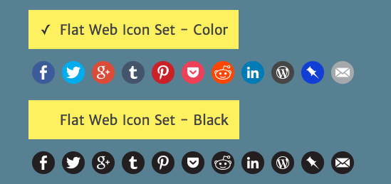

MoClippings #5 不出門也能拿美國碩士學歷？！
發刊日 : 2016/03/15 - 2016/04/08
本期包含：資訊知事、行銷推廣、專案管理、技術知事
資訊知事
-
- 美國伊利諾伊大學香檳分校（UIUC）率先在 Coursera 上推出了完整的數據科學碩士項目（Master of Computer Science in Data Science）。無論你在哪裏，只要符合校方要求被錄取，就可以通過在線學習來拿到碩士學位。
- https://cs.illinois.edu/news/mooc-based-ms-data-science
-
- 注意，在系统真正地投入生产使用之前，再好的架构都只是假设，产品越晚被使用者使用，失败的成本和风险就越高，而小步行进，通过MVP快速实验，获取客户反馈，迭代演化产品，能有效地减少失败的成本和风险。
- 58同城沈剑：好的架构源于不停地衍变，而非设计
- 宜人贷系统架构–高并发下的进化之路
-
- 以電腦運作原理來看，多工、工作切換，代價是 context switch 的 overhead。所以，近代敏捷開發方法論，總是希望在制度設計上盡量降低工作切換，Lean Thinking 提到的一項實驗，違反直覺的第二種方法，為什麼反而比較快（儘管這可能只是後見之明）。不過，我們可能要重新思考「工作切換」這件事情。不能只從微觀的局部角度，更要從整體、flow 的角度去檢視。
-
- 書單：
- 軟體項目成功之道
- 軟體構築美學
- 程式師修煉之道 – 從小工到專家 – 亨特
- 高效程式員的 45 個習慣－敏捷開發修煉之道
- Clean Code
- 人月神話 (你沒看錯，這不是只給管理者看的屁話，裡面也有歷久不衰的設計建議）
- 軟體開發書單
- 書單：
-
- 刪除短短11行程式碼，竟然會令Facebook、Reddit、Netflix及Spotify等大型網站出現錯誤？早前互聯網的一次意外，揭露了不少網站的弱點。
-
- Product Driven Growth from Lean Product Meetup
- 著名 Growth Hacker Sean Ellis 分享他對於以產品為主的成長的心得，投影片內有滿多指引在哪個階段該做怎樣的事情，問什麼問題。我覺得最有收穫的是在找 Product/Market Fit 的時候，應該：
- 找到『非用不可』的用戶：
- 為什麼他們要找新產品
- 他們如何用這個產品
- 如果要他們推薦給別人，他們會怎麼形容這個產品
- 找到產品『最重要的優點』：
- 問第一群人：『什麼是你覺得這產品最重要的優點？』（問答題）
- 問第二群人：『什麼是你覺得這產品最重要的優點？』（用上面的答案做多選），『為什麼這個優點重要？』（問答題）
- 找到『非用不可』的用戶：
- 著名 Growth Hacker Sean Ellis 分享他對於以產品為主的成長的心得，投影片內有滿多指引在哪個階段該做怎樣的事情，問什麼問題。我覺得最有收穫的是在找 Product/Market Fit 的時候，應該：
- Product Driven Growth from Lean Product Meetup
行銷推廣
- 設計資源總匯
- 缺一個設計工具的時候，這個網站裡頭有非常多設計資源可以參考
專案管理
- RICE: Simple prioritization for product managers - Inside Intercom
- Reach: 有多少用戶會被影響
- Impact: 對單一用戶的影響力
- Confidence: 對這個功能的信心程度，如有個功能沒有數據支持，那信心分數就可以低一點
- Effort: 實作需要花費的力氣
- RICE Score = (Reach X Impact X Confidence) / Effort
技術知事
開發心法
- 工程師必須知道的10個演算法
-
- 從這篇了解 https
DevOps
-
- Phansible provides an easy-to-use interface that helps you generate Ansible provisionings for PHP-based projects.
- 快速建立 PHP 環境使用 Ansible
- https://github.com/Phansible/phansible
系統架構
-
- “淘汰缓存”还是“更新缓存”?
- 更新缓存的优点：缓存不会增加一次miss，命中率高
- 淘汰缓存的优点：简单
- 更新缓存还是淘汰缓存，主要取决于“更新缓存的复杂度”
- 缓存和数据库的操作时序，究竟采用哪种时序呢？
- （1）先写数据库，再淘汰缓存
- 先写数据库，再淘汰缓存：第一步写数据库操作成功，第二步淘汰缓存失败，则会出现DB中是新数据，Cache中是旧数据，数据不一致
- （2）先淘汰缓存，再写数据库
- 假设先淘汰缓存，再写数据库：第一步淘汰缓存成功，第二步写数据库失败，则只会引发一次Cache miss。
- 结论：数据和缓存的操作时序，结论是清楚的：先淘汰缓存，再写数据库。
- （1）先写数据库，再淘汰缓存
缓存和数据库架构简析
- 主流优化方案是服务化：加入一个服务层，向上游提供帅气的数据访问接口，向上游屏蔽底层数据存储的细节，这样业务线不需要关注数据是来自于cache还是DB。
- 非主流方案是异步缓存更新：业务线所有的写操作都走数据库，所有的读操作都总缓存，由一个异步的工具来做数据库与缓存之间数据的同步。
结论强调
（1）淘汰缓存是一种通用的缓存处理方式
（2）先淘汰缓存，再写数据库的时序是毋庸置疑的
（3）服务化是向业务方屏蔽底层数据库与缓存复杂性的一种通用方式
- “淘汰缓存”还是“更新缓存”?
PHP
- Master PHP Array Functions
- 這篇講解了很多 PHP 的 array function 使用。
- array_map & array_walk
- array_reduce
- array_pop
- array_shift
- array_push
- array_unshift
- array_slice
- array_merge
- array_sum
- array_filter
前端網頁開發工具
-
- 我們可以將跟文字有關係的放在 img 的標籤上
- img 這個標籤是個可以取代性元素，所以 :before 跟 :after 通常在 img 上是無效的，但是，當圖片消失或無法載入的時候，偽元素就可以使用。
《Understanding ECMAScript 6》笔记
- Understanding ECMAScript 6 原文電子書
*
- Understanding ECMAScript 6 原文電子書
Browser Rendering Optimization
- Browser的渲染過程不止這些，還必須載入js, css, web api等等的資源，因此有所謂的Rendering Pipeline，其順序為：
- Javascript: 載入與執行JS/CSS
- Style: 根據js與css計算style
- Layout: 當style套入元素時，瀏覽器要檢查是否會影響到整個畫面的排列，並進行排列
- Paint: 排列後有更動到的元素需要重新繪製（第一次載入的話當然是全部繪製）
- Composite: 最後就是將所有元素重新合成回來（重新繪製的元素與原本的元素）
- Browser的渲染過程不止這些，還必須載入js, css, web api等等的資源，因此有所謂的Rendering Pipeline，其順序為：
Simple Sharing Buttons Generator - 快速簡單的社群分享按鈕產生器
- 
dbpatterns - 蒐集很多資料庫的 schema 模式，也可以建立自己的。